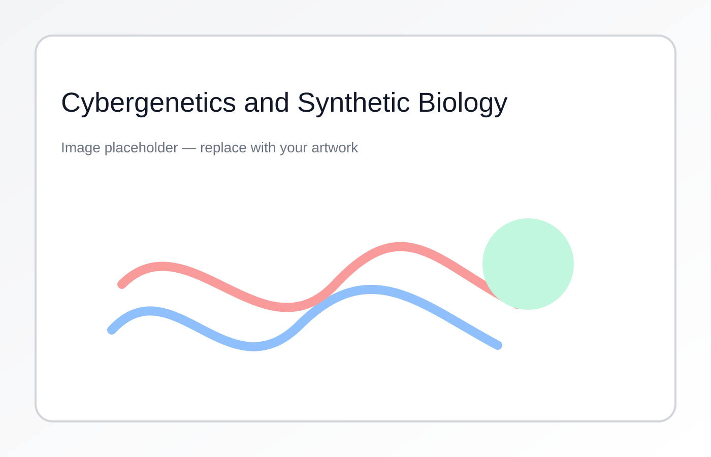

Synthetic biology aims to endow living cells with new functionalities through engineered genetic circuits. Our research combines mathematical modeling, control theory, and experimental validation to design, analyze, and implement feedback control strategies in living cells.
We have developed pioneering strategies for multicellular control in microbial consortia and in vivo real-time control platforms for gene expression regulation, demonstrating closed-loop control of biological processes at both single-cell and population levels. Our work spans from fundamental theoretical analysis of genetic circuits to practical implementation in microfluidic platforms and bioreactors, addressing challenges in circuit design, population control, and experimental validation.

Metabolic engineering, biotechnology, personalized medicine, batch fermentation, population density control in bioreactors, therapeutic interventions